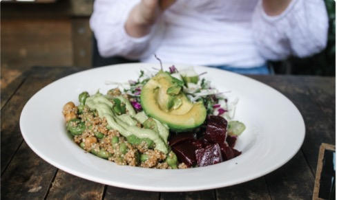

CSS
Galeria principal
Proyectos visuales
Las imagenes se presentan inicialmente en blanco y negro; al pasar el cursor recuperan color, escala y movimiento para destacar cada proyecto.

HTML
Cupones

Flexbox
Iguana page
Perfil profesional
Resumen
Project Manager de TI y Salud Digital con mas de 15 anos de experiencia liderando implementaciones, interoperabilidad clinica y despliegues de soluciones en entornos hospitalarios complejos.
Experiencia en gestion end-to-end de proyectos, coordinacion de stakeholders clinicos y tecnologicos, levantamiento de requerimientos, validacion funcional, go-live y estabilizacion post implementacion.
Herramientas y enfoque
Competencias claves
Gestion de proyectos
PMO, cronogramas, riesgos, alcance, stakeholders, SLA, KPI, JIRA, MS Project, Planner, Scrum y Kanban.
Healthcare IT
HL7 v2.x, FHIR R4, DICOM, HIS, LIS, RIS, PACS, dispositivos medicos y workflows clinicos.
Implementacion
Levantamiento funcional, documentacion, pruebas, gestion del cambio, capacitacion, go-live y soporte.
Comunicacion
Coordinacion cliente-proveedor, preventa tecnica, demos, presentaciones ejecutivas y manejo de incidentes.
Impacto medible
Resultados destacados
15+
integraciones HL7 v2.x disenadas, levantadas o validadas.
43
sistemas PACS coordinados, instalados y puestos en marcha.
120+
usuarios clinicos impactados en proyectos recientes.
700k+
usuarios del sector publico impactados por RIS/PACS.
Trayectoria
Experiencia profesional
Ene 2018 - Actualidad
B. Braun Medical
IT Project Manager | Ingeniero Especialista en Sistemas Clinicos
Liderazgo de proyectos end-to-end para soluciones clinicas digitales, interoperabilidad, validacion funcional, salida a produccion y estabilizacion post go-live.
Oct 2014 - Dic 2017
Ultramed
Ingeniero de Soporte e Implementacion de Equipos Medicos
Instalacion, mantenimiento, reparacion e implementacion de sistemas PACS, con pruebas funcionales y capacitacion de usuarios clinicos y tecnicos.
May 2007 - Sep 2014
Tecnoimagen
Ingeniero Senior y Lider de Soporte RIS/PACS
Soporte senior e implementacion nacional de soluciones RIS/PACS, incluyendo PACS SYNAPSE de FUJIFILM para salud publica y privada.
Casos relevantes
Proyectos de alto impacto
FALP
Sistema de administracion segura y trazabilidad de quimioterapia, con modelamiento de procesos oncologicos, integraciones HL7 y validacion clinica.
BUPA Chile
Monitoreo y trazabilidad de terapias de infusion, coordinando equipos clinicos y TI para mejorar visibilidad operativa.
Clinica Alemana
Implementacion de monitoreo centralizado de bombas de infusion en areas criticas para continuidad operativa y seguridad del paciente.
SSMN
Dimensionamiento, implementacion y puesta en marcha de RIS/PACS en hospitales de la red publica metropolitana norte.
Hospital de Curico
Levantamiento y modelamiento de procesos para el primer sistema de quimioterapia del sector publico chileno.
MINSAL
Implementacion y capacitacion de mas de 40 sistemas PACS en un proyecto nacional de telemedicina.
Formacion
Educacion y certificaciones
Ingenieria Electronica
Universidad Tecnica Federico Santa Maria, 2007
Professional Scrum Master I
Scrum.org, 2026
Certificacion HL7 FHIR
CENS, 2025
Programa de Desarrollo Ejecutivo
Universidad Adolfo Ibanez, 2023
Curso Experiencia de Servicio
Universidad Adolfo Ibanez, 2025
LPIC-1
Linux Professional Institute Certification
GitHub
Portafolio de proyectos
HTML + CSS
landing_bootstrap
Landing page turistica enfocada en estructura responsive, contenido visual y estilos personalizados.
Ver repositorio
HTML
landing_cupon
Proyecto tipo landing inspirado en cupones, con foco en maquetacion, cards y presentacion de ofertas.
Ver repositorio
HTML + CSS
flexbox_iguana
Pagina construida con Flexbox para practicar layout, distribucion visual y adaptacion de contenido.
Ver repositorioContacto
Disponible para nuevos desafios
Chile | Ingles B2 | Español nativo